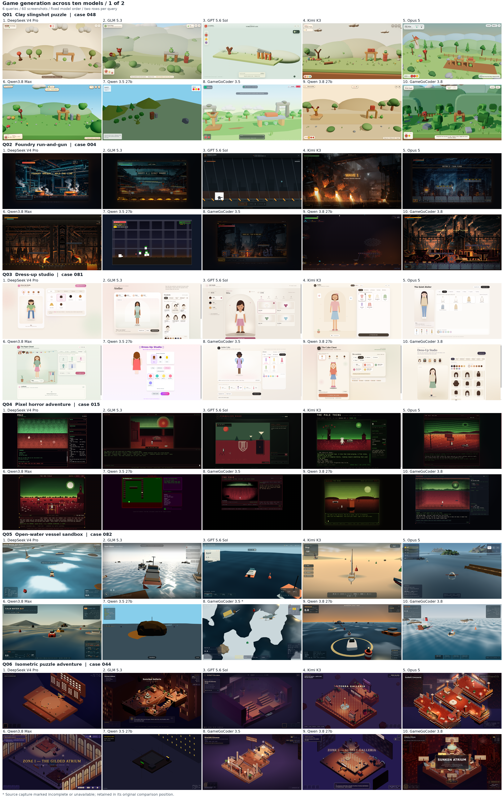

GAMEGO · AI GAME DEVELOPMENT
GameGo
Playable browser games created by GameGoCoder 3.8. Pick a game, click play, and explore what the agent built.
▶ PLAY 12 GAMES NOWOpen game galleryGameGoCoder 3.8 ↗GameGoBench ↗
2D2.5D3D12 playable examples
